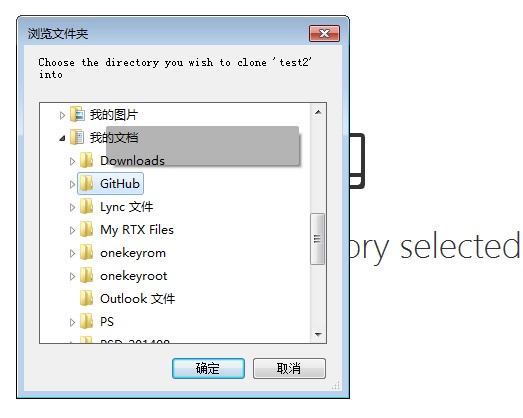

最近一周研究了一下github这个开源的网站，发现github真是一个很强大的开发平台；自我感觉悟性太低，所以只有慢慢消化一下最近学习使用github的使用心得。
因为工作的原因，以前经常会接触github这个网站，但是自己一直没有去深入体验一下，最近花了两天时间研究了一下，搜集各种学习资料，然后自己操作了一遍，感觉使用起来确实很方便，无论是自己开发还是小团队合作开发似乎是一个不错的工具和平台。现在将这几天学习到的东西记录下来，怕日子就了忘记了，可以翻出来review
准备工作
1、进入github.com，下载客户端，根据自己的系统下载github客户端，有windows版和mac版，我使用的是windows版
2、首先注册github帐号，使用邮箱注册就ok了
3、新建一个repository中文翻译，这个词的意思是仓库，个人觉得翻译为"代码库"比较合适
4、建设好代码库之后，直接点击set up in desktop 可以将库中代码下载到本地，或者使用右侧导航clone in desktop
5、在本地目录可以自己设置，我选择默认的目录

如何生成git page
选择要生成的页面的 repository，点击页面右侧的Settings
按照要求输入 相应的内容之后 找到 Automatic page generator 这个按钮 点击
进入到如下页面，配置好页面信息以及页面内容，默认的内容都是可以修改掉的，修改完成之后点击 最下方的 continue to layouts 的按钮
进入到选择模版的页面，在页面最上方选择你喜欢的页面模版，下方是你的页面的预览图，选择ok之后 点击publish page是就可以发布页面了
第一次发布需要等待十分钟之后才能看到发布的页面的效果，以后更新会即时同步
如何查看页面，还是点击settings 找到git-page 可以看到如下信息就可找到页面的链接地址
如何使用git shell对代码进行一些必要操作
以下操作基于上面的步骤，如果刚刚创建好test代码库，并且已经使用git客户端把代码下载到本地，可以开始下面的操作
在clone完成之后，Git 会自动为你将此远程仓库命名为origin（origin只相当于一个别名，运行git remote –v或者查看.git/config可以看到origin的含义），并下载其中所有的数据，建立一个指向它的master 分支的指针，我们用(远程仓库名)/(分支名) 这样的形式表示远程分支，所以origin/master指向的是一个remote branch（从那个branch我们clone数据到本地），但你无法在本地更改其数据。同时，Git 会建立一个属于你自己的本地master 分支，它指向的是你刚刚从remote server传到你本地的副本。随着你不断的改动文件，git add, git commit，master的指向会自动移动，你也可以通过merge（fast forward）来移动master的指向。
打开 git shell工具
输入cd test 定位到test目录
输入git init 初始化git

输入git branch -r 可以查看远程分支
输入git branch 可以查看本地分支
p>
此时输入框显示指向的是本地 master分支
输入git fetch origin //把服务器上的代码checkout 下来
输入git checkout -b gh-pages-local origin/gh-pages 可以将远程分支gh-pages映射到本地名为gh-pages-local的分支 为保持分支名一致可以使用同名
p>
输入git pull 显示已经是最新的版本
然后可以对本地分支修改，我修改了一下index.html ，修改完成之后进入下一步
输入git add index.html 将修改过的文件加入队列 也可以使用（*）或“ .”可表示整个分支的内容 此行命令输入之后 会显示本地分支修改的部分
输入git commit -m "修改信息" 对分支进行提交 提交之后才能push到服务器
输入git push -u orgin local-branche-name //local-branche-name 为刚刚定义的本地分支名
这样的话 本地文件就传到服务器上的相关分支了
p>
git 分支操作汇总
git branch -a //查看远程分支
git branch //查看本地分支
git branch branch-name //创建分支
git checkout branch-name //切换分支
git branch -d local-branch-name //删除本地分支
git push origin :mybranch //删除远程分支
git checkout -b local-branche-name origin/gh-pages //远程分支映射到本地
$ cd your_repo_root/repo_name //定位到项目（repository）目录下
$ git fetch origin //把服务器上的代码checkout 下来
$ git checkout gh-pages //绑定本地分支和服务器分支
$ git add filename //添加到队列 或者使用通配符*
$ git commit -m"info" //提交代码
$ git push -u origin master //将本地代码推送到服务器的master分支